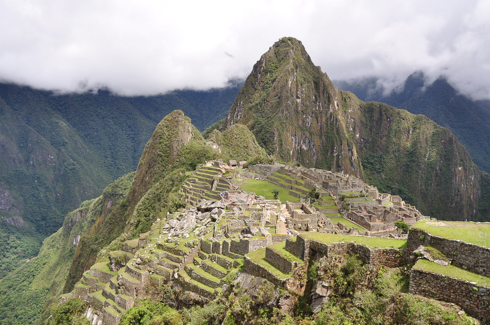
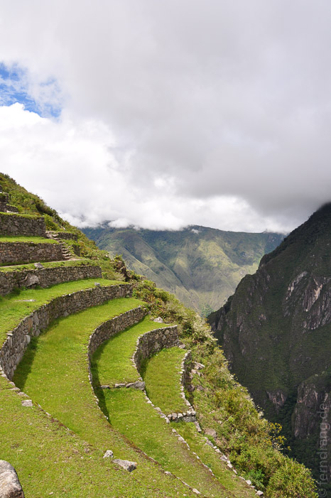
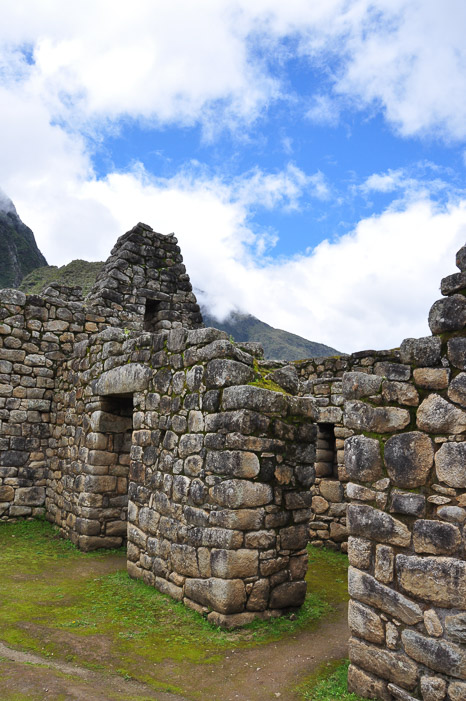
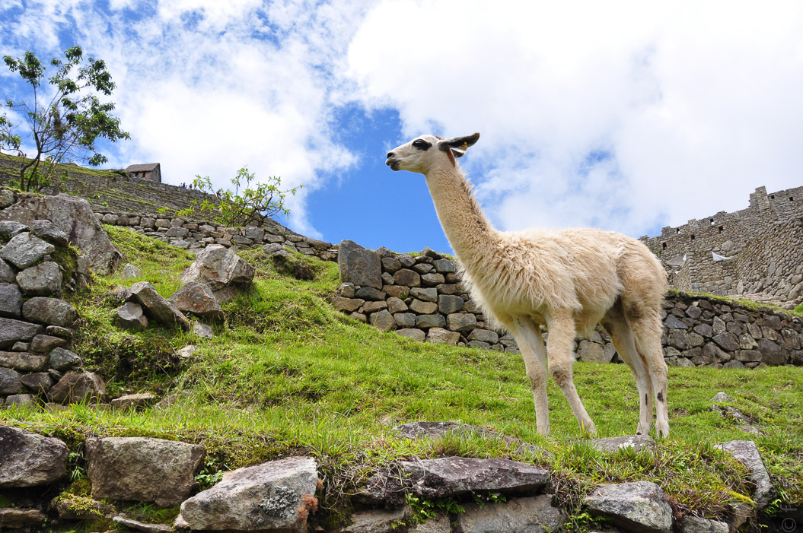

An Machu Picchu führt in Peru natürlich kein Weg vorbei. Das wissen leider auch die Peruaner, die daraus die grösste Touristenabzocke des Landes machen. Am schlimmsten ist dabei die staatliche Zuglinie, die es bewerkstelligt hat, die einzige Anfahrtsmöglichkeit einzunehmen. Der Zug kostet das vierfache vom Eintritt. Auch unser Besuch war etwas stressig, da der besagte Zug Probleme hatte, und wir nicht von Cusco sondern vom zwei Stunden entfernteren Ort Ollantaytambo losfahren mussten. Ein Taxi hat uns in halsbrecherischem Tempo durch die Berge geschossen, damit wir den Zug nicht verpassten.
Die Zugfahrt war dennoch reizvoll, da sie durch ein tief eingeschnittenes Tal am reißenden und schlammig braunen Rio Urubamba entlang führte. Die Wagons haben teilverglaste Dächer, so dass man auch die steilen Bergspitzen sehen kann.
Vor Ort muss man dann noch einen sündhaften teuren Bus den Berg hoch nehmen. Durch die Umbuchung auf den anderen Zug waren wir jedoch recht früh dort, so dass wir vor dem großen Ansturm ankamen. Unser Führer wusste nichts von dem anderen Zug und sollte zwei Stunden nach uns kommen. Wir sind ohne ihn los gegangen und haben uns dadurch Warten und jede Menge schlechtes Englisch erspart.
Vom Bahnhof aus fährt der Bus in engen Serpentinen durch einen wolkenverhangenen Bergnebelwald. Er schraubt sich immer höher den steilen Hang hinauf, bis der Eingang erreicht ist. Noch lagen die umliegenden Berge und Täler unter einer zerfetzten Wolkendecke, durch die hier und da etwas Landschaft erahnbar war.
Von einem gegenüberliegenden Berg aus hat man einen fantastischen Blick auf die gesamte Ruinen-Anlage. Der Anblick der steilen Hänge, in die die verrückten Inkas Terrassen gezimmert haben, entschädigt für den ganzen Rummel, der hier getrieben wird. Wir konnten noch einige Stunden durch den Komplex wandern, bevor es in abendlicher Stimmung wieder zurück ging.
Den Rückweg haben die Zugbegleiter mit einer niedlichen "Fashion Show" verkürzt, bei der Alpaka-Waren vorgeführt wurden. Die Dame sah bezaubernd aus, der Herr wurde von den Pullovern in einen Gemüsehändler verwandelt.
   